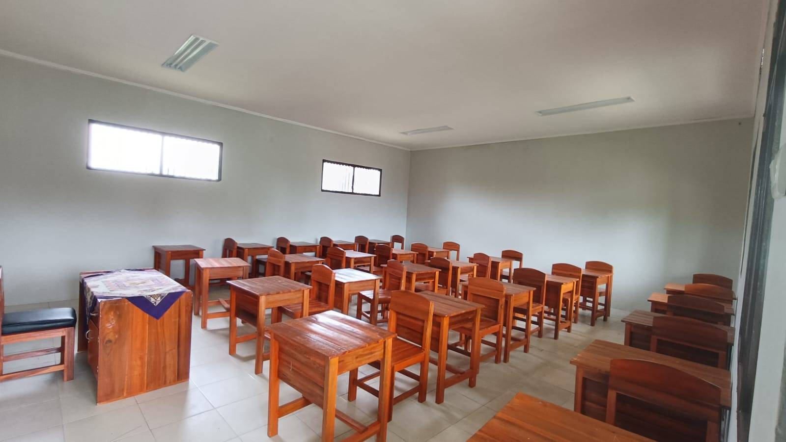
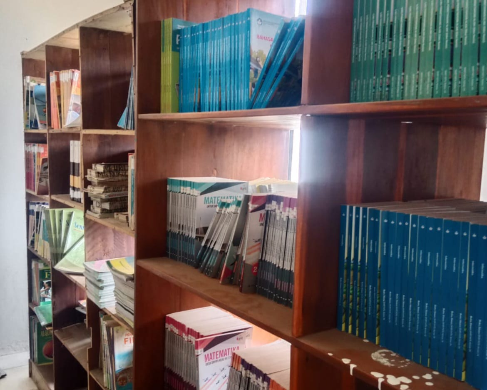
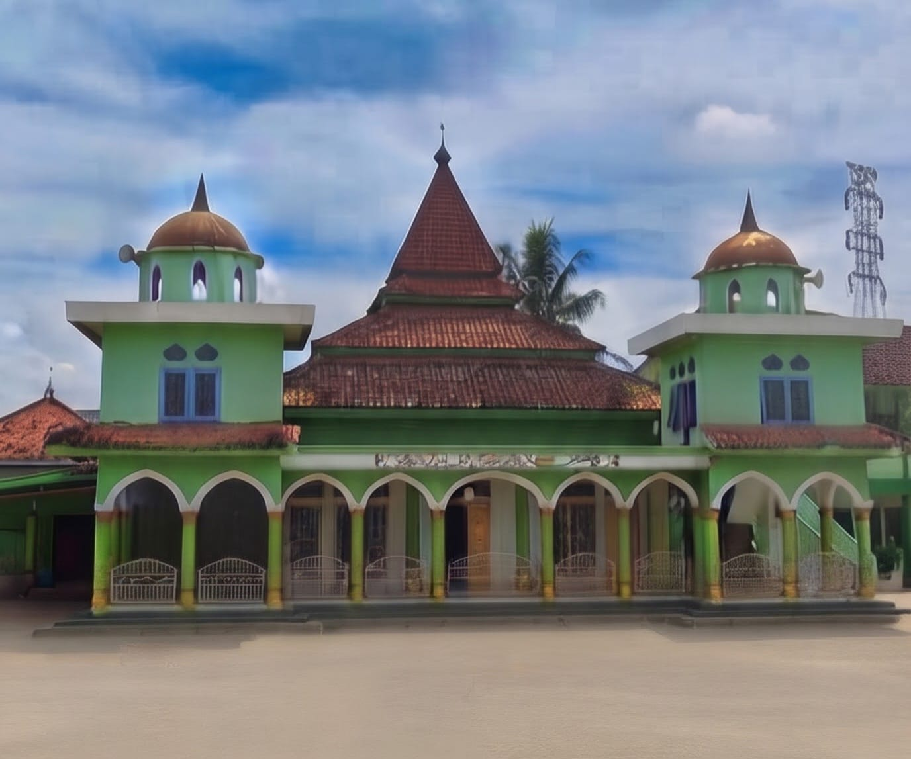
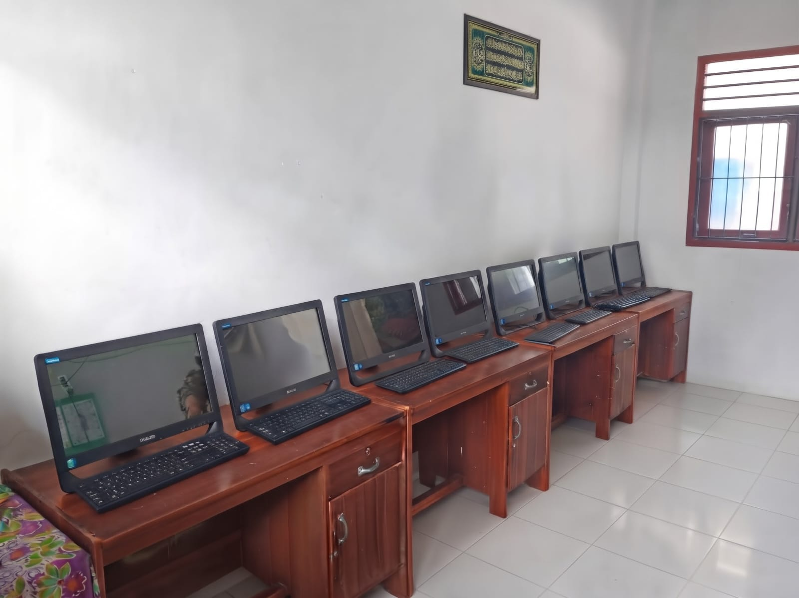
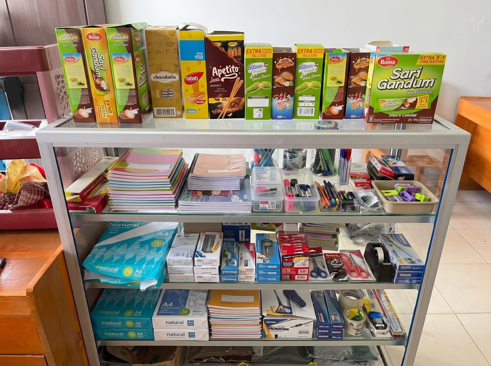

Cerdas, Unggul, dan Berkarakter Islami.
Mengenal lebih dekat MTsS Nurul Iman Rejo Agung

MTsS Nurul Iman Rejo Agung adalah lembaga pendidikan Islam tingkat menengah yang memadukan kurikulum nasional Kementerian Agama dengan nilai-nilai keislaman mendalam. Kami berkomitmen mencetak generasi cerdas, berakhlak mulia, serta siap menghadapi tantangan zaman melalui pembinaan karakter dan akademik yang disiplin.
"Terwujudnya Murid yang Cerdas, Unggul, Berwawasan IPTEK yang Berdasarkan IMTAQ."
Kepemimpinan dan Manajemen MTsS Nurul Iman Rejo Agung
Elok Puji Hartanti, S.Ag., M.Pd.
Yuli Fitriyani, S.Pd.
Desi Harisandi, S.Pd.I.
Sahrul, S.Pd.I., M.M.
Kurikulum terbaik untuk mengoptimalkan potensi siswa
Program hafalan Juz 30, 29, dan pilihan surat penunjang dengan bimbingan ustadz/ustadzah berpengalaman.
Kegiatan pengembangan bakat dan keterampilan santri dalam bidang keagamaan, seperti pidato, MC, tilawah, sari tilawah, dan shalawat untuk membentuk pribadi yang percaya diri, kreatif, serta berakhlakul karimah.
Pembinaan intensif Matematika, IPA, dan IPS untuk persiapan kompetisi tingkat kabupaten hingga nasional.
Wadah pengembangan bakat dan minat peserta didik
Program hafalan Al-Qur'an Juz 30, 29, dan surat-surat pilihan dengan bimbingan ustadz/ustadzah.
Latihan pidato, MC, tilawah, shalawat, dan seni dakwah untuk meningkatkan keberanian serta keterampilan berbicara di depan umum.
Melatih kepemimpinan, kemandirian, dan kedisiplinan.
Membentuk jiwa nasionalisme dan baris-berbaris yang tangguh.
Olimpiade IPA, Matematika, dan IPS.
Latihan teknik bermain futsal, kerja sama tim, dan sportivitas.
Latihan gerak tari tradisional dan kreasi untuk mengembangkan bakat, kreativitas, serta kecintaan terhadap budaya.
Latihan seni musik Islami melalui rebana, shalawat, dan lantunan pujian kepada Nabi Muhammad SAW.
Latihan vokal dan harmonisasi suara melalui lantunan lagu-lagu Islami yang penuh pesan kebaikan.
Fasilitas pendukung kegiatan belajar mengajar yang representatif
Dilengkapi pencahayaan optimal, kipas angin, dan meubelair yang baik untuk kenyamanan belajar.

Koleksi buku pelajaran lengkap, referensi agama, fiksi, dan ruang baca yang kondusif.

Pusat pembinaan ibadah harian, sholat berjamaah, tadarus, dan kajian keislaman siswa.

Fasilitas pembelajaran komputer untuk meningkatkan keterampilan teknologi dan literasi digital murid.

Tempat penyediaan kebutuhan sekolah dan perlengkapan belajar bagi murid serta warga madrasah.
Informasi terkini dan dokumentasi aktivitas madrasah
Belum ada berita yang dipublikasikan.
Belum ada foto galeri yang diunggah.
Mari bergabung bersama MTsS Nurul Iman Rejo Agung. Pendaftaran dibuka untuk lulusan SD/MI sederajat.
Pendaftaran Online/Offline
Pemeriksaan Berkas
Daftar Ulang
Lokasi dan sarana komunikasi resmi madrasah
Jl. Raya Protokol Desa Rejo Agung, Kec. Tegineneng, Kabupaten Pesawaran, Lampung
085273496299
mtsnurulimanrejoagung@gmail.com